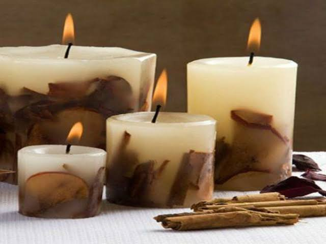
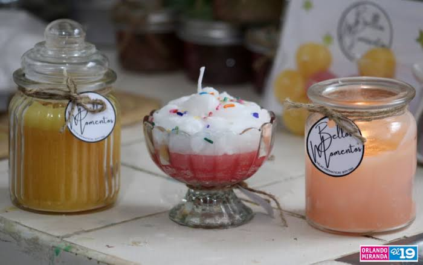
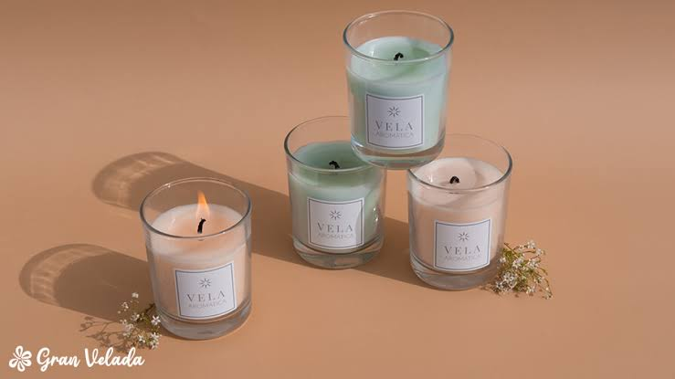

La idea surgió cuando una persona observó que muchas personas buscaban decorar sus hogares y crear ambientes relajantes. Por eso, decidió aprender a elaborar velas aromáticas con diferentes colores, formas y fragancias. Al principio, preparó algunas velas para regalar a sus familiares y amigos. Como tuvieron buena aceptación, comenzó a venderlas y a promocionarlas por WhatsApp y Facebook.
Se utilizó un sistema de producción artesanal y comercialización, porque las velas se elaboran manualmente con materiales como cera, esencias aromáticas, colorantes y mechas. Después, se empaquetan y se venden a los clientes. También se utiliza un sistema de ventas por redes sociales para recibir pedidos.